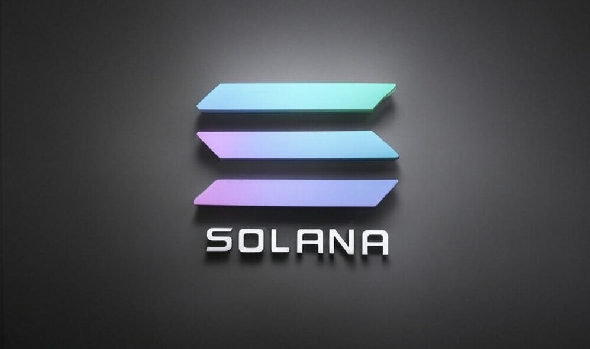

Introduction to Solana
Solana is a high-performance blockchain network designed to support decentralized applications (dApps) and cryptocurrencies. It aims to solve the scalability issues seen in many other blockchains, offering high transaction throughput with low fees. Launched in 2020 by Anatoly Yakovenko, Solana leverages unique innovations, including its Proof of History (PoH) consensus mechanism, to achieve unparalleled speed and efficiency.
Key Features of Solana
- Scalability: Solana can process over 65,000 transactions per second (TPS), significantly higher than many competing blockchains.
- Low Fees: Transaction fees on Solana remain extremely low, often costing fractions of a cent.
- Proof of History (PoH): A novel timestamping method that helps order transactions before they are validated by the Proof of Stake (PoS) consensus.
- Fast Finality: Transactions are confirmed in under a second, making Solana one of the fastest blockchains.
- Growing Ecosystem: Solana supports a broad range of decentralized applications, including DeFi, NFTs, and gaming projects.
Solana vs. Ethereum
Ethereum is the most widely used blockchain for smart contracts and dApps, but it faces scalability and high-fee issues. Here’s how Solana compares to Ethereum:
| Feature |
Solana |
Ethereum |
| Consensus Mechanism |
Proof of History + Proof of Stake |
Proof of Stake (Ethereum 2.0) |
| Transaction Speed |
~65,000 TPS |
~15-30 TPS |
| Finality Time |
~400 ms |
~6 minutes |
| Transaction Fees |
<$0.01 per transaction |
Often >$10 per transaction |
| Scalability |
High |
Limited (Layer 2 needed) |
| Security |
Less decentralized, but efficient |
Highly decentralized, more secure |
Key Differences
- Speed & Cost: Solana is significantly faster and cheaper than Ethereum, making it ideal for microtransactions and real-time applications.
- Security & Decentralization: Ethereum has a much larger validator network, making it more decentralized and secure, but at the cost of speed and efficiency.
- Smart Contract Development: Ethereum uses Solidity for smart contracts, whereas Solana uses Rust and C, which may have a steeper learning curve but offer performance advantages.
Solana vs. Avalanche
Avalanche is another high-performance blockchain designed to solve scalability issues. While it shares similarities with Solana, key differences exist.
| Feature |
Solana |
Avalanche |
| Consensus Mechanism |
Proof of History + Proof of Stake |
Avalanche Consensus + Proof of Stake |
| Transaction Speed |
~65,000 TPS |
~4,500 TPS |
| Finality Time |
~400 ms |
~1 second |
| Transaction Fees |
<$0.01 |
~$0.10 - $0.50 |
| Security & Decentralization |
Less decentralized |
More decentralized |
| Ecosystem |
Fast-growing, NFT & DeFi focus |
Multi-chain network, enterprise adoption |
Key Differences
- Mechanism: Avalanche uses a novel consensus model that provides strong security and quick finality, whereas Solana's PoH boosts speed but sacrifices some decentralization.
- Ecosystem Focus: Solana is more NFT and DeFi-focused, while Avalanche is designed to support enterprise use cases and custom blockchain deployments.
- Decentralization: Avalanche operates with thousands of validators, making it more decentralized than Solana, which has fewer nodes due to its high hardware requirements.
Conclusion
Solana is an innovative blockchain that provides high-speed, low-cost transactions, making it an attractive choice for dApps, DeFi, and NFT projects. However, when compared to Ethereum and Avalanche, each blockchain has its own strengths and weaknesses. Ethereum remains the most decentralized and secure, Solana prioritizes speed and low costs, and Avalanche offers a balance of speed, security, and flexibility. Choosing the right blockchain depends on the specific needs of the project and the trade-offs developers are willing to make.